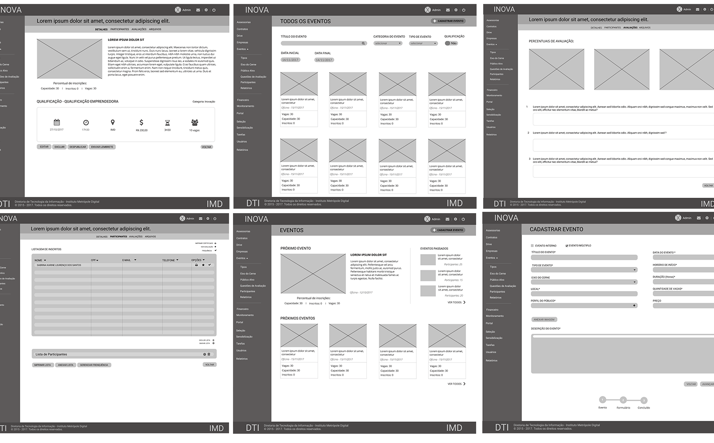
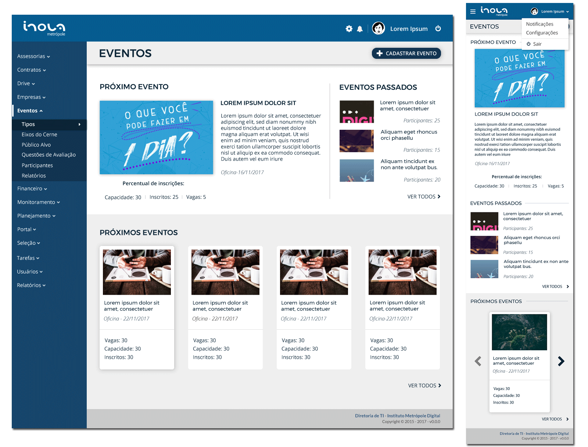

Inova Metrópole
Portal
Front-end
IMD (Instituto Metrópole Digital)
2018
https://inova.imd.ufrn.br
ferramentas
Eclipse IDE, Adobe Illustrator
tecnologias
HTML5, CSS3 (Bootstrap 4), JavaScript (jQuery)
colaboradores
Larissa Moura, Luciano Eduardo, Sabrina Karine
Criação do site institucional para a Incubadora Inova Metrópole. A Inova é uma incubadora de empresas que tem o objetivo de fomentar o empreendedorismo em TI no Rio Grande do Norte.
Depois de muitas reuniões com os stakeholders, após pensar em várias alternativas, receber feedbacks e refinar a proposta, chegamos no resultado atual.
O site foi desenvolvido para ser responsivo (se adapta a qualquer tamanho de tela). Além disso, contém alguns recursos de acessibilidade, como alto contraste e personalização do tamanho da fonte.

O site também divulga notícias e os eventos realizados pela incubadora. E permite que um usuário inscreva-se para participar.

Toda a equipe, empresas incubadas e parceiros são apresentados à comunidade através do site.
Inova Metrópole
Sistema Web
UX & UI, Front-end
IMD (Instituto Metrópole Digital)
2018
ferramentas
Eclipse IDE, Figma, Adobe Illustrator
tecnologias
HTML5, CSS3 (Bootstrap 4), JavaScript (jQuery)
colaboradores
Bruno Matias, Débora Azevedo, Larissa Moura, Luciano Eduardo, Sabrina Karine, Sara Paloma, Wellington Miguel
Avaliação e redesign do sistema de gerenciamento da Incubadora Inova Metrópole. O sistema gerencia as atividades internas da incubadora, além de monitorar todas as empresas incubadas.
Arqueologia do Sistema
Inicialmente, começamos a navegar pelo sistema, tentando conhecer suas principais funcionalidade. O sistema antigo era desorganizado, com muitas informações poluindo a tela, além do site não ser responsivo.
Investigação
Antes de desenhar de fato, entrevistamos os usuários e aplicamos questionários para ouvir sugestões de melhorias e descobrimos que eles estavam muito insatisfeitos:
"Podia ser bem melhor sabe, se a gente conseguisse organizar algumas coisas só, ficaria bem melhor. Não vou nem falar em termos de visual, de design. Algumas coisas não estão em ordem alfabética, você tem que olhar de um em um pra descobrir, porque as vezes eu quero procurar uma assessoria específica, não tenho como saber qual foi, eu tenho que olhar."
"Hoje as informações estão dispersas, por mais que tenhamos acesso por meio da rede ou da web, mas elas estão em plataformas separadas, isso dificulta um pouco o gerenciamento, estabelecimento de indicadores e coisas do gênero."
"Seria interessante se tivesse integração por exemplo com a agenda do Google, que tivesse integração com o Trello, se tivesse um próprio módulo de tarefas que a gente pudesse usar, que ele tivesse um pouco de melhoria na UX, na user experience, na usabilidade do site pra torná-lo um pouco mais intuitivo, que ele não é muito."
Inspeção
A partir de então, fizemos uma avaliação por inspeção, baseada nas Heurísticas de Usabilidade de Nielsen.
O resultado foi um relatório listando as violações de usabilidade encontradas, classificando-as em graus de severidade e apontando possíveis soluções.
Dessa forma, chegamos a conclusão que, apesar dos problemas catastróficos, a maioria dos problemas eram pequenos e estavam relacionados a falhas de consistência e padronização.

Observação
Para confirmar nossas suspeitas, realizamos uma avaliação por observação em alguns módulos do sistema. Pedimos que os usuários tentassem realizar uma tarefa enquanto gravamos a tela do computador e a voz dos participantes.
Depois, classificamos as reações dos usuários em categorias comuns (tagging), de acordo com o Método da Avaliação de Comunicabilidade, para encontrar possíveis rupturas de comunicação.
Finalmente, chegamos nas prováveis causas de rupturas na comunicação usuário-sistema:
- Muitas funcionalidades inúteis ou subutilizadas
- Um único caminho possível
- Desorganização dos elementos na interface
- Componentes de interface difíceis de usar
Protótipação de baixa fidelidade
Em seguida, começamos a elaborar protótipos de baixa fidelidade, juntamente com um documento de requisitos simplificado descrevendo as funcionalidades.
Protótipação de alta fidelidade
Após validação dos wireframes com os usuários, iniciamos a elaboração de protótipos de alta fidelidade.
Dado que o sistema é muito grande, a sua reconstrução ainda está em andamento. Mas os primeiros passos já foram dados na direção de uma interface mais simples, organizada e útil, além de responsiva.
Guia de Estilo
O front-end foi construído a partir do Bootstrap 4. Personalizamos o framework com a identidade da Inova. Para documentar e testar os componentes personalizados, também construímos um guia de estilo próprio, contendo exemplos de uso e snippets de código para ajudar os programadores.